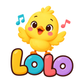

LOLO
Lolo Channel Kids
🇧🇷 Músicas infantis originais em desenho animado para bebês e crianças de 1 a 3 anos. A pintinha Lolo, a notinha mágica Pipo e a turma cantam e brincam na Casa LOLO.
🇺🇸 Original animated songs for babies and toddlers, ages 1 to 3. Sing along with Lolo the little chick and her friends.
🇪🇸 Canciones infantiles originales en dibujos animados para bebés y niños de 1 a 3 años. ¡Canta con la pollita Lolo y sus amigos!
O app LOLO / The LOLO app
🇧🇷 O LOLO também é o nome da ferramenta interna que o dono do canal usa para enviar os vídeos do próprio canal ao YouTube, com título, descrição, legendas e playlist de cada idioma. Ela usa os Serviços de API do YouTube (YouTube API Services), funciona só no canal Lolo Channel Kids, não é oferecida a outras pessoas e não coleta dados de espectadores.
🇺🇸 LOLO is also the name of the internal tool the channel owner uses to upload the channel's own videos to YouTube, with title, description, captions and a playlist for each language. It uses YouTube API Services, works only on the Lolo Channel Kids channel, is not offered to anyone else and collects no viewer data.
Política de privacidade / Privacy policy · Termos de uso / Terms of use · YouTube Terms of Service